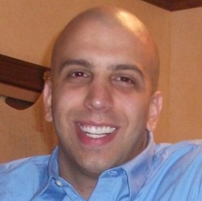

Dan Holcomb
Postdoctoral Researcher, University of Michigan
Tuesday, October 22, 2013
12:00pm - 1:00pm
3725 BBB
Faculty Host: Kevin Fu
Tuesday, October 22, 2013
12:00pm - 1:00pm
3725 BBB
Faculty Host: Kevin Fu
“SRAM fingerprinting using power-up state minimum data retention voltages”
Abstract
This talk will summarize two recent works in the area of SRAM fingerprinting. In the first part, he will discuss the use of SRAM power-up state as unique IC fingerprints, and show how these fingerprints can also be used as seeds for true random number generation. In the second part, he will discuss an approach for deriving the fingerprints from the minimum data retention voltage of each SRAM cell instead of the power up state. The data retention voltage is related to power-up state, but has the potential for more informative fingerprints, albeit at a higher measurement cost